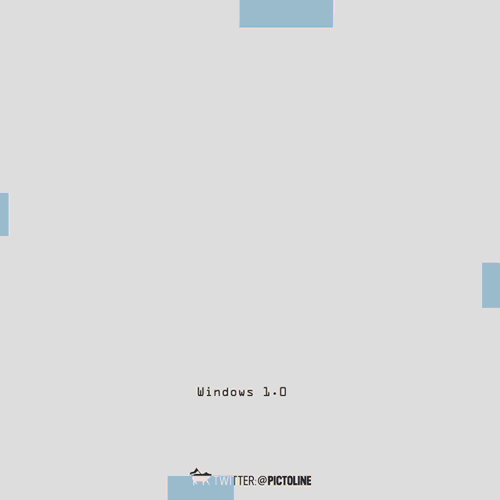
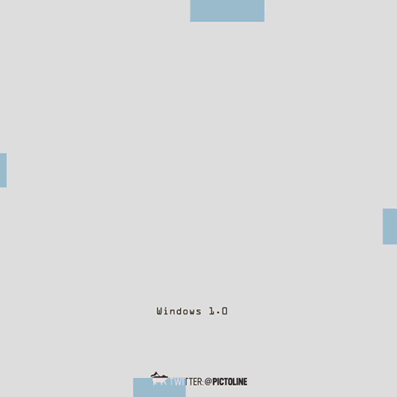
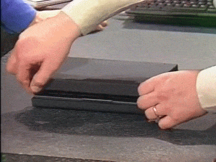
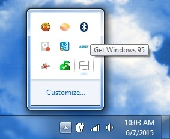

Windows 1.0 to 10 in just one gif.

Windows 1.0 to 10 in just one gif.

This keyboard on a laptop from 1995!
But they didn’t cure the one major flaw: the ‘tickle button’ mousing. I agree with a previous commenter that this is likely an IBM/Lenovo Thinkpad.

:D
forget Windows 10, the future is already here